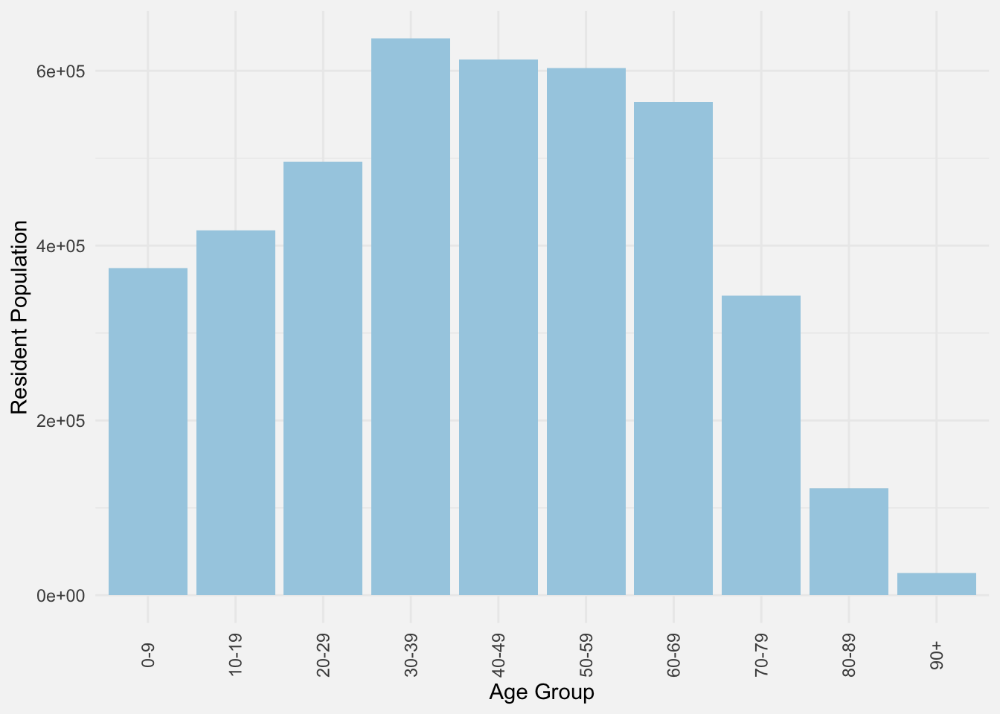
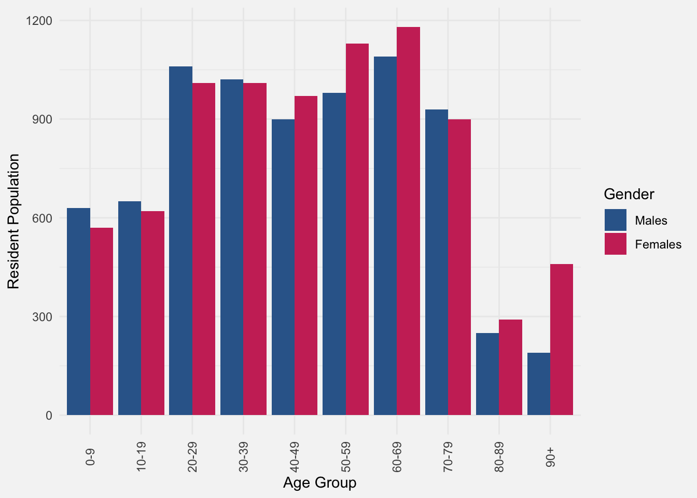
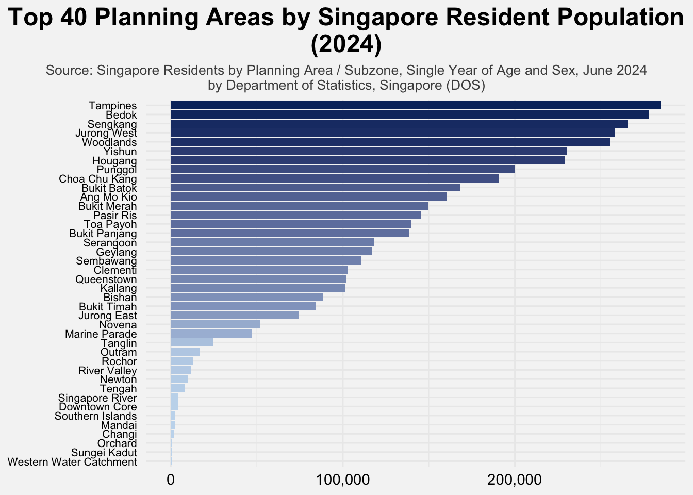

pacman::p_load(
tidyverse, ggplot2, haven, knitr, patchwork, ggthemes, scales,
ggridges, ggpubr, gganimate, ggdist, ggtext, ggalt, ggExtra, cowplot,
ggnewscale, colorspace, magrittr, RColorBrewer, ggstatsplot, egg,
geomtextpath, readxl, performance, parameters, see, ggiraph,
treemap, treemapify
)Take-home_Ex01: Investigating Singapore Residents by Planning Area / Subzone, Single Year of Age and Sex at June 2024 by Data Visualisations
1 Overview
1.1 Background
The Singapore Department of Statistics regularly publishes data to provide a comprehensive view of the nation’s demographic landscape. One such dataset, Singapore Residents by Planning Area/Subzone, Single Year of Age and Sex (June 2024), offers granular insights into the spatial and age-sex distribution of Singapore’s resident population in 2024. It captures critical population attributes down to single years of age, disaggregated by gender and geographically mapped across planning areas and subzones defined under the Urban Redevelopment Authority’s Master Plan 2019.
These statistics serve as a foundational reference for urban planners, policymakers, and researchers to assess trends in population ageing, gender balance, and regional population concentration. In particular, they support decisions on infrastructure planning, public service allocation, and housing development strategies. Understanding the demographic structure in such detail allows for better anticipation of future needs across education, healthcare, and eldercare.
1.2 The Task
Assuming the role of the graphical editor at a local media company, the task is to create compelling visualizations that highlight Singapore’s demographic structures and distribution in 2024. Using appropriate Exploratory Data Analysis (EDA) techniques and ggplot2, this post aims to:
• Uncover the age and sex distribution across Singapore’s planning areas and subzones.
• Identify population concentration hotspots and patterns of demographic imbalance.
• Convey insights through at most three clear and informative data visualisations suitable for a general audience in a digital publication.
2 Loading Packages
The following code chunk uses p_load() of pacman package to check if tidyverse packages are installed in the computer. If they are, the libraries will be called into R.
3 Preparing Data
The dataset Singapore Residents by Planning Area/Subzone, Single Year of Age and Sex (June 2024) is obtained from the Singapore Department of Statistics. It provides detailed demographic information on residents by planning area and subzone, segmented by age and sex as of June 2024. Each row in the dataset represents a specific demographic group within a given planning area, making it suitable for visualising population distribution and structure across the country.
3.1 Importing File and Cheking
3.1.1 Importing File
The code chunk below is used to import the dataset (csv file) using read_csv().
respop <- read_csv("respopagesex2024/respopagesex2024.csv")3.1.2 Scanning the Data
Next, for a better understanding of the dataset, glimpse() will be utilized to observe the variables and their data types:
glimpse(respop)Rows: 60,424
Columns: 6
$ PA <chr> "Ang Mo Kio", "Ang Mo Kio", "Ang Mo Kio", "Ang Mo Kio", "Ang Mo K…
$ SZ <chr> "Ang Mo Kio Town Centre", "Ang Mo Kio Town Centre", "Ang Mo Kio T…
$ Age <chr> "0", "0", "1", "1", "2", "2", "3", "3", "4", "4", "5", "5", "6", …
$ Sex <chr> "Males", "Females", "Males", "Females", "Males", "Females", "Male…
$ Pop <dbl> 10, 10, 10, 10, 10, 10, 10, 10, 30, 10, 20, 10, 20, 30, 30, 10, 3…
$ Time <dbl> 2024, 2024, 2024, 2024, 2024, 2024, 2024, 2024, 2024, 2024, 2024,…As shown, the dataset consists of 6 columns and over 60,424 rows (observations). Each observation represents a specific demographic segment of Singapore’s resident population, defined by:
PA: Planning Area
SZ: Subzone
Age: Single year of age (0–90+)
Sex: Male or Female
Based on the output of the code, there are 4 categorical variables (PA, SZ, Age, and Sex), 1 numerical variable (Pop), and 1 time variable (Time).
3.1.3 Checking for Duplicates
To ensure data integrity, a check for duplicated records was conducted. Duplicated entries can result in inaccurate analysis due to double counting. The following code block uses group_by_all() and filter(n()\>1) from the dplyr package to identify fully duplicated rows:
duplicate <- respop %>%
group_by_all() %>%
filter(n() > 1) %>%
ungroup()
duplicate# A tibble: 0 × 6
# ℹ 6 variables: PA <chr>, SZ <chr>, Age <chr>, Sex <chr>, Pop <dbl>,
# Time <dbl>The result confirms that no duplicated rows exist.
To further verify that each record is unique, the number of distinct combinations across the key demographic variables (PA, SZ, Age, Sex, and Time) was computed:
n_distinct(respop %>% select(PA, SZ, Age, Sex, Time))[1] 60424This confirms that all 60,424 rows in the dataset represent unique combinations, with no repetition across the key variables.
3.1.4 Checking for Missing Values
Before proceeding with the analysis, it is also important to verify whether the dataset contains any missing values, as these may influence the accuracy and integrity of results.
An initial check was conducted using is.na() and sum() to detect any missing entries:
which(is.na(respop))integer(0)sum(is.na(respop))[1] 0This confirms that there are no missing values in the dataset. All six variables (PA, SZ, AG, SEX, Pop, and Time) are complete and require no additional cleaning or row removal. Thus, the dataset is ready for subsequent analysis without further preprocessing.
3.2 Data Wrangling
3.2.1 Selecting Variables
Variable selection is a common step in data analysis, particularly when working with datasets containing numerous attributes—some of which may be redundant depending on the analysis objectives. However, the respopagesex2024 dataset is already well-structured and concise, consisting of six essential variables:
| Category | Variable.Name | Description | Type | Value |
|---|---|---|---|---|
| Geography | PA | Planning Area | char | e.g. Ang Mo Kio |
| Geography | SZ | Subzone | char | e.g. Ang Mo Kio Town Centre |
| Demographics | Age | Age (single year of age) | char | 0 to 90+ |
| Demographics | Sex | Gender | char | Males, Females |
| Demographics | Pop | Resident count (Rounded to nearest 10) | dbl | 0, 10, 20, 30, ..., 1180 |
| Metadata | Time | Year of observation | dbl | 2024 |
respop_description <- data.frame(
Category = c("Geography", "Geography", "Demographics", "Demographics", "Demographics", "Metadata"),
`Variable Name` = c("PA", "SZ", "Age", "Sex", "Pop", "Time"),
Description = c("Planning Area",
"Subzone",
"Age (single year of age)",
"Gender",
"Resident count (Rounded to nearest 10)",
"Year of observation"),
Type = c("char", "char", "char", "char", "dbl", "dbl"),
Value = c("e.g. Ang Mo Kio",
"e.g. Ang Mo Kio Town Centre",
"0 to 90+",
"Males, Females",
"0, 10, 20, 30, ..., 1180",
"2024")
)
library(kableExtra)
kable(respop_description) %>%
kable_styling(full_width = FALSE) %>%
row_spec(0, bold = TRUE) %>%
add_header_above(c("Description of Variables in the `respopagesex` Dataset" = ncol(respop_description)),
bold = TRUE, font_size = 16, color = "#222222")While the Time column contains only a single value (2024), indicating that the dataset reflects the demographic structure of Singapore for year 2024, it was retained to support reproducibility. This ensures compatibility should additional years be introduced in the future. As such, no variables were removed or renamed during the data preparation phase.
3.2.2 Correcting Data Types
As shown above, the current data types of the variables are:
| Variable.Name | Description | Type | Value |
|---|---|---|---|
| PA | Planning Area | char | e.g. Ang Mo Kio |
| SZ | Subzone | char | e.g. Ang Mo Kio Town Centre |
| Age | Age (single year of age) | char | 0 to 90+ |
| Sex | Gender | char | Males, Females |
| Pop | Resident count (Rounded to nearest 10) | dbl | 0, 10, 20, 30, ..., 1180 |
| Time | Year of observation | dbl | 2024 |
respop_description <- data.frame(
`Variable Name` = c("PA", "SZ", "Age", "Sex", "Pop", "Time"),
Description = c("Planning Area",
"Subzone",
"Age (single year of age)",
"Gender",
"Resident count (Rounded to nearest 10)",
"Year of observation"),
Type = c("char", "char", "char", "char", "dbl", "dbl"),
Value = c("e.g. Ang Mo Kio",
"e.g. Ang Mo Kio Town Centre",
"0 to 90+",
"Males, Females",
"0, 10, 20, 30, ..., 1180",
"2024")
)
library(kableExtra)
kable(respop_description) %>%
kable_styling(full_width = FALSE) %>%
row_spec(0, bold = TRUE) %>%
add_header_above(c("Description of Variables in the `respopagesex` Dataset" = ncol(respop_description)),
bold = TRUE, font_size = 16, color = "#222222")The first four variables (PA, SZ, Age, Sex), all are currently typed as character (char). While character and factor are both used to store categorical values in R, their purposes differ:
• character is more flexible for free-form text, such as names or labels that may change over time.
• factor is more structured and suited for categorical data with a known, limited set of possible values, often used for grouping or plotting.
Given this distinction:
• PA (Planning Area), SZ (Subzone), and Age (Age) are correctly stored as character since they represent a wide range of labels or identifiers that are not necessarily fixed.
• Sex, however, only contains a small set of known categories (“Males”, “Females”), and is better modeled as a factor for consistency in grouping, analysis, and visualization.
To reflect this, the following code converts the Sex column to factor type:
respop$Sex <- factor(respop$Sex, levels = c("Males", "Females"))This change ensures that Sex is treated as a proper categorical variable in downstream analysis and plotting.
The last two variables, Pop and Time, were initially stored as double-precision numeric values (dbl), which is the default numeric type in R for both whole numbers and decimals. However, since both variables contain only whole numbers, it is more semantically accurate and memory-efficient to convert them to integer (int) type.
Pop, which stores resident population counts (rounded to the nearest 10), holds only whole number values. Converting it to integer reinforces its role as a count-based measure.
Time represents the year of observation and contains a single repeated value (2024). Converting it to integer clarifies its role as a discrete temporal marker.
The conversion is performed using as.integer() as follows:
respop$Time <- as.integer(respop$Time)
respop$Pop <- as.integer(respop$Pop)After applying the necessary type corrections, the variables and their data types are now summarized below:
| Variable.Name | Description | Type | Value |
|---|---|---|---|
| PA | Planning Area | char | e.g. Ang Mo Kio |
| SZ | Subzone | char | e.g. Ang Mo Kio Town Centre |
| Age | Age (single year of age) | char | 0 to 90+ |
| Sex | Gender | fct | Males, Females |
| Pop | Resident count (Rounded to nearest 10) | int | 0, 10, 20, 30, ..., 1180 |
| Time | Year of observation | int | 2024 |
respop_description <- data.frame(
`Variable Name` = c("PA", "SZ", "Age", "Sex", "Pop", "Time"),
Description = c("Planning Area",
"Subzone",
"Age (single year of age)",
"Gender",
"Resident count (Rounded to nearest 10)",
"Year of observation"),
Type = c("char", "char", "char", "fct", "int", "int"),
Value = c("e.g. Ang Mo Kio",
"e.g. Ang Mo Kio Town Centre",
"0 to 90+",
"Males, Females",
"0, 10, 20, 30, ..., 1180",
"2024")
)
library(kableExtra)
kable(respop_description) %>%
kable_styling(full_width = FALSE) %>%
row_spec(0, bold = TRUE) %>%
add_header_above(c("Revised Description of Variables in the `respopagesex` Dataset" = ncol(respop_description)),
bold = TRUE, font_size = 16, color = "#222222")| Variable.Name | Description | Type | Value |
|---|---|---|---|
| PA | Planning Area | char | e.g. Ang Mo Kio |
| SZ | Subzone | char | e.g. Ang Mo Kio Town Centre |
| Age | Age (single year of age) | char | 0 to 90+ |
| Sex | Gender | fct | Males, Females |
| Pop | Resident count (Rounded to nearest 10) | int | 0, 10, 20, 30, ..., 1180 |
| Time | Year of observation | int | 2024 |
This can be confirmed via:
glimpse(respop)Rows: 60,424
Columns: 6
$ PA <chr> "Ang Mo Kio", "Ang Mo Kio", "Ang Mo Kio", "Ang Mo Kio", "Ang Mo K…
$ SZ <chr> "Ang Mo Kio Town Centre", "Ang Mo Kio Town Centre", "Ang Mo Kio T…
$ Age <chr> "0", "0", "1", "1", "2", "2", "3", "3", "4", "4", "5", "5", "6", …
$ Sex <fct> Males, Females, Males, Females, Males, Females, Males, Females, M…
$ Pop <int> 10, 10, 10, 10, 10, 10, 10, 10, 30, 10, 20, 10, 20, 30, 30, 10, 3…
$ Time <int> 2024, 2024, 2024, 2024, 2024, 2024, 2024, 2024, 2024, 2024, 2024,…3.2.3 Creating New Variables
To facilitate age-based demographic analysis, a new variable Age_Group was created by binning the Age field into 10-year intervals. This transformation enables grouped aggregation and more interpretable visualizations.
The Age variable in the dataset is stored as a character string, containing values such as “0”, “1”, …, “89”, and “90_and_Over”. Using mutate() and case_when() from the dplyr package, each age was categorized into its respective age band, ranging from “0-9” up to “90+”.
respop <- respop %>%
mutate(Age_Group = case_when(
Age %in% as.character(0:9) ~ "0-9",
Age %in% as.character(10:19) ~ "10-19",
Age %in% as.character(20:29) ~ "20-29",
Age %in% as.character(30:39) ~ "30-39",
Age %in% as.character(40:49) ~ "40-49",
Age %in% as.character(50:59) ~ "50-59",
Age %in% as.character(60:69) ~ "60-69",
Age %in% as.character(70:79) ~ "70-79",
Age %in% as.character(80:89) ~ "80-89",
Age == "90_and_Over" ~ "90+"
))After this transformation, the dataset now includes a new column Age_Group, which categorizes each individual into broader age segments, supporting age-grouped aggregation for subsequent visual and statistical analysis.
glimpse (respop)Rows: 60,424
Columns: 7
$ PA <chr> "Ang Mo Kio", "Ang Mo Kio", "Ang Mo Kio", "Ang Mo Kio", "Ang…
$ SZ <chr> "Ang Mo Kio Town Centre", "Ang Mo Kio Town Centre", "Ang Mo …
$ Age <chr> "0", "0", "1", "1", "2", "2", "3", "3", "4", "4", "5", "5", …
$ Sex <fct> Males, Females, Males, Females, Males, Females, Males, Femal…
$ Pop <int> 10, 10, 10, 10, 10, 10, 10, 10, 30, 10, 20, 10, 20, 30, 30, …
$ Time <int> 2024, 2024, 2024, 2024, 2024, 2024, 2024, 2024, 2024, 2024, …
$ Age_Group <chr> "0-9", "0-9", "0-9", "0-9", "0-9", "0-9", "0-9", "0-9", "0-9…4 Demographic Structures and Distribution of Singapore (2024)
This section explores Singapore’s demographic composition in 2024 using the variables from the respopagesex2024 dataset: age group, gender, and planning area. Two of the charts present univariate distributions—population by age group and by planning area—while one chart combines both age group and gender to examine demographic variation across life stages. Together, the charts provide foundational insights into Singapore’s demographic landscape in the year 2024.
4.1 Population by Age Group
To understand the age structure of the population, a bar chart was generated to visualize the total resident population by single-year age group (Age_Group). The chart displays a clear distribution across age brackets ranging from infancy (age 0) to the elderly population (90+). This allows for the identification of key demographic cohorts, such as school-age children, working-age adults, and seniors.

ggplot(respop, aes(x = Age_Group, y = Pop)) +
geom_col(fill = "#4682B4") +
labs(
title = "Singapore Resident Population by Age Groups (2024)",
subtitle = "Source: Singapore Residents by Planning Area / Subzone, Single Year of Age and Sex, June 2024\nby Department of Statistics, Singapore (DOS)",
x = NULL,
y = NULL
) +
theme_minimal() +
theme(
plot.margin = margin(t = 20, r = 40, b = 10, l = 10),
plot.title = element_text(hjust = 0.5, face = "bold", size = 18),
plot.subtitle = element_text(hjust = 0.5, size = 10, color = "grey30"),
axis.text.x = element_text(angle = 90, hjust = 1, size = 11, color = "black"),
axis.text.y = element_text(size = 11, color = "black"),
plot.background = element_rect(fill = "#f5f5f5", colour = "#f5f5f5")
) +
scale_y_continuous(labels = scales::comma)The visualisations reveal clear patterns in Singapore’s demographic structure in terms of age. The first bar chart shows that the population is concentrated in the working-age groups (30–59), with a notable continuation into the 60–69 group—together forming the largest segments. This suggests a strong labor force base with a significant proportion approaching retirement. Meanwhile, the youngest age groups (0–9, 10–19) and the elderly (70-79, 80–89, and 90+) represent smaller proportions, the former of which points to possibly declining birth rates.
This age distribution shows that Singapore may face challenges in the future due to its ageing population. For now, the population steadily increases from young adults to those in their 60s, suggesting a stable group of working-age residents. However, there are fewer young people, which raises concerns about whether there will be enough residents to replace the current workforce over time. Also, as the current labor force will be moving into retirement and fewer younger people will enter the workforce, there may be a rise in the number of dependents compared to workers. To prepare for this, Singapore will need long-term planning in areas like healthcare, eldercare, and policies that encourage higher birth rates or even immigration to support future population needs.
4.2 Population by Gender and Age Group
To gain further insight into population distribution across age brackets, a grouped bar chart taking gender into account is plotted. This visual groups males and females side-by-side for each age group bin, offering a straightforward comparison across life stages. In this chart, males are represented in blue and females in pink, ensuring clarity and easy interpretation.

ggplot(respop, aes(x = Age_Group, y = Pop, fill = Sex)) +
geom_col(position = "dodge") +
scale_fill_manual(values = c("Males" = "#336699", "Females" = "#CC3366")) +
labs(
title = str_wrap("Singapore Resident Population by Age Groups and Gender (2024)", width = 50),
subtitle = "Source: Singapore Residents by Planning Area / Subzone, Single Year of Age and Sex, June 2024\nby Department of Statistics, Singapore (DOS)",
x = NULL,
y = NULL,
fill = "Gender"
) +
theme_minimal() +
theme(
plot.title.position = "plot",
plot.title = element_text(hjust = 0.5, face = "bold", size = 18),
plot.subtitle = element_text(hjust = 0.5, size = 10, color = "grey30"),
axis.text.x = element_text(angle = 90, hjust = 1, size = 11, color = "black"),
axis.text.y = element_text(size = 11, color = "black"),
legend.text = element_text(size = 12),
plot.background = element_rect(fill = "#f5f5f5", colour = "#f5f5f5")
)The gender-disaggregated age distribution highlights both demographic symmetry and divergence across life stages. From ages 0 to 49, the number of males and females is relatively balanced, with only minor variations. However, in the 50–59 age group, females begin to noticeably outnumber males. Although this difference persists, the gap narrows slightly in the 60–69 group and 80-89 group before widening again in the 90+ group, where the disparity is most pronounced—females nearly double the male population. Interestingly, the 70–79 cohort shows a temporary reversal, with males slightly outnumbering females, suggesting that survival rates can vary across specific age bands despite overall trends in female longevity. These patterns reflect Singapore’s broader demographic trajectory: gender parity during early and working years, and increasing female dominance in the oldest segments. These insights emphasize the importance of gender-responsive planning in healthcare, eldercare, and retirement policy design.
4.3 Population by Planning Area
The PA variable, representing Planning Area, was analyzed to understand the spatial distribution of Singapore’s resident population. A horizontal bar chart was plotted, with areas sorted in descending order of population to clearly highlight disparities between more and less densely populated regions. To maintain legibility and avoid overcrowding the chart, only the top 40 planning areas were displayed. This selection provides a view of the most relevant population centers while ensuring the visualization remains clear and interpretable.

respop %>%
group_by(PA) %>%
summarise(Total = sum(Pop)) %>%
arrange(desc(Total)) %>%
slice_head(n = 40) %>%
ggplot(aes(x = reorder(PA, Total), y = Total, fill = Total)) +
geom_col() +
coord_flip() +
scale_y_continuous(labels = comma) + # format x-axis (now horizontal due to coord_flip)
scale_fill_gradient(low = "#c6dbef", high = "#08306b") +
guides(fill = "none") + # remove legend
labs(
title = str_wrap("Top 40 Planning Areas by Singapore Resident Population (2024)", width = 60),
subtitle = "Source: Singapore Residents by Planning Area / Subzone, Single Year of Age and Sex, June 2024\nby Department of Statistics, Singapore (DOS)",
x = NULL,
y = NULL
) +
theme_minimal() +
theme(
plot.title.position = "plot",
plot.title = element_text(hjust = 0.5, face = "bold", size = 18),
plot.subtitle = element_text(hjust = 0.5, size = 10, color = "grey30"),
axis.text.x = element_text(size = 11, color = "black"),
axis.text.y = element_text(size = 8, color = "black", margin = margin(r = 4)), # reduce overlap
plot.background = element_rect(fill = "#f5f5f5", colour = "#f5f5f5")
)This visualisation reveals interesting insights into spatial population concentration in Singapore in 2024. As can be seen from the chart, Tampines, Bedok, and Sengkang emerge as the most populated areas, each exceeding 200,000 residents. In contrast, areas like Western Water Catchment, Sungei Kadut, and Orchard sit at the lower end of the scale. The gradient color fill emphasizes the stark contrast between high- and low-density regions.
Remarkably, just the top 10 planning areas account for over 50% of the total population of these 40 planning areas, while the top 20 hold more than 75% of the residents. This highlights how urban dwellers are heavily concentrated in a limited number of zones. Furthermore, the top 5 areas collectively house more than 10 times the population of the bottom 5 combined, illustrating stark spatial inequality. These insights on the spatial distribution of Singapore residents support targeted infrastructure investment and equitable resource planning across Singapore’s diverse planning areas.
5 Summary
This report presents an analysis of Singapore’s resident population in 2024 using the respopagesex2024 dataset, focusing on three key demographic dimensions: age group, gender, and planning area. Through three tailored visualisations — univariate and bivariate — the report uncovers population patterns that are vital for informing urban planning, social policy, and infrastructure development.
Key findings:
• Age Distribution: The population is concentrated in the working-age groups (30–59), suggesting a currently strong labor force. However, smaller proportions in the younger cohorts (0–19) indicate potential challenges in future workforce replacement.
• Gender-Age Dynamics: Gender distribution is relatively balanced up to midlife, with a noticeable shift in the 50–59 age group where females begin to noticeably outnumber males. While this gap narrows slightly in the 60–69 and 80-89 age bands, it widens again sharply in the 90+ group—highlighting gendered longevity differences.
• Spatial Patterns: Tampines, Bedok, and Sengkang are the most populated among the 55 planning areas, each exceeding 200,000 residents. The top 10 planning areas account for over half the population, and the top 20 hold more than 75% of the population.
Recommendations for future research:
• Temporal Comparisons: Adding data from previous years would reveal trends in ageing, fertility, and gender distribution.
• Linking Demographic and Socioeconomic Data: Merging this dataset with information on income or housing can reveal how population patterns relate to differences in living standards and whether various groups have fair access to essential services like housing support.
6 References
Department of Statistics Singapore. (2024). Population Trends 2024. Retrieved from https://www.singstat.gov.sg/publications/population/population-trends
Kam, T. S. (2025). R for visual analytics. Retrieved from https://r4va.netlify.app/
Scherer, C. (2025). Exciting data visualizations with ggplot2 extensions. Retrieved from https://z3tt.github.io/exciting-extensions/slides.html#/course-materials
Wickham, H., & Grolemund, G. (2017). R for Data Science: Import, Tidy, Transform, Visualize, and Model Data. O’Reilly Media. Retrieved from https://r4ds.hadley.nz/